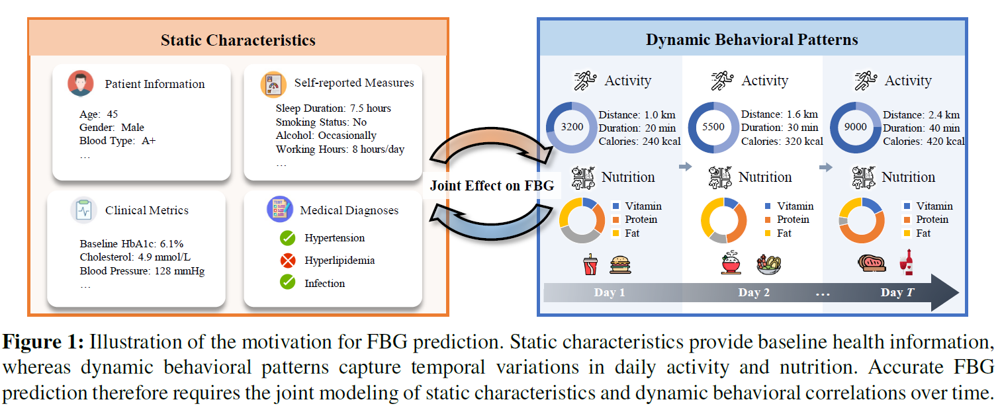
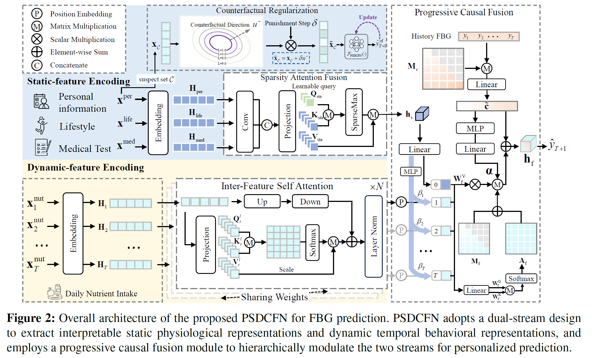
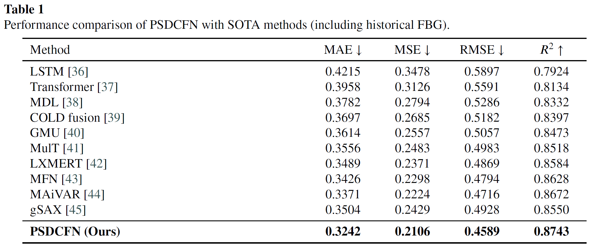
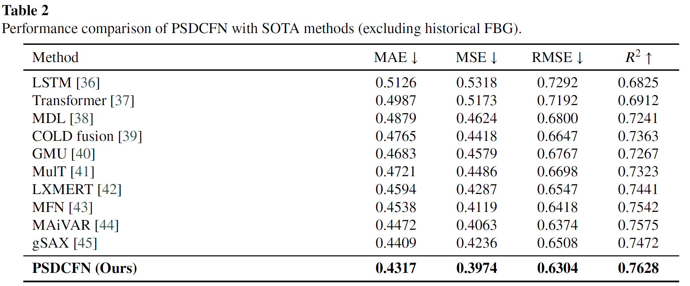
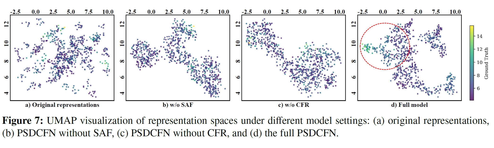
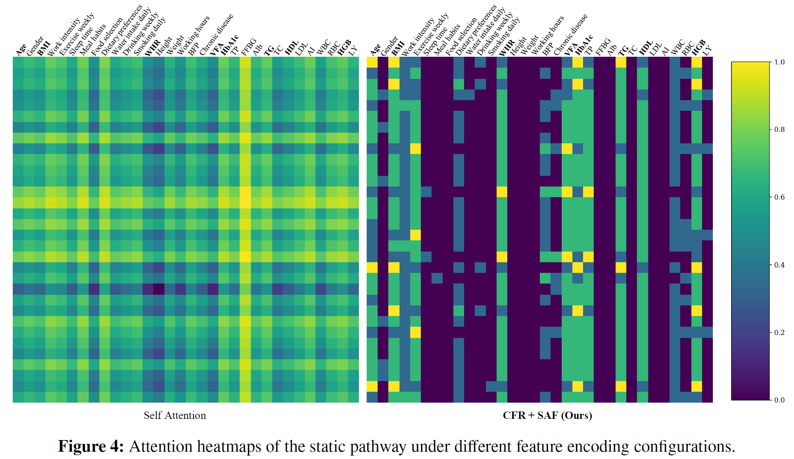
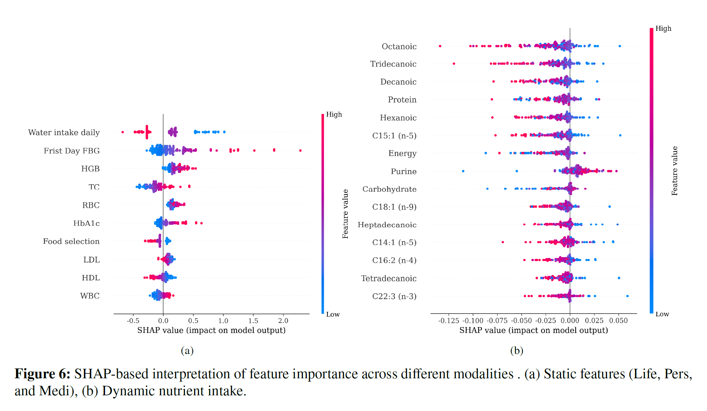

Accurate FBG prediction requires joint modeling of static characteristics and dynamic behavioral patterns. Static characteristics provide baseline health information, while dynamic behavioral patterns capture temporal variations in daily nutrition and activity. Their interaction jointly shapes FBG outcomes over time.

PSDCFN features a dual-stream architecture: a static stream with counterfactually regularized sparse attention, and a dynamic stream with inter-feature self-attention. A progressive causal fusion module hierarchically injects static information into temporal nutrient representations.

Experimental results demonstrate that PSDCFN consistently outperforms existing methods in personalized FBG prediction.


UMAP visualizations of learned representations show that PSDCFN produces well-structured embeddings that correlate with FBG values and prediction error.

Sparse attention weights reveal which physiological features the model focuses on for personalized modulation of nutritional patterns.

SHAP analysis identifies the most influential features for FBG prediction, providing interpretable insights into which static and dynamic factors drive the predictions.

@article{gu2025psdcfn,
title = {PSDCFN: A Personalized Static-Dynamic Counterfactual Fusion
Network for Nutrition-Aware Fasting Blood Glucose Prediction},
author = {Gu, Haoyu and Jing, Peiguang and Jiang, Huaiyan and Liu, Yu},
journal = {Preprint},
year = {2025}
}